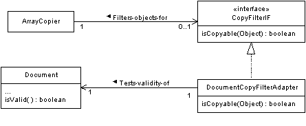
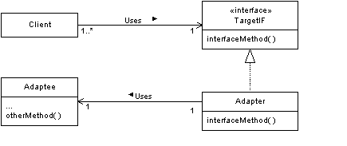

| First Found
in Printing |
Page | Description of Error | Fixed in
Printing |
| 1 | 20 |
|
? |
| 1 | 23 | .The lines
{concurrency = guarded} and {concurrency = concurrent} are reversed. The line {concurrency = concurrent} should appear first. |
? |
| 1 | 25 | Figure 1.28 refers to a method named isisEmpty. The method name should be isEmpty. | ? |
| 1 | 57 | There is a paragraph that begins
|
? |
| 1 | 92 | Paragraph Heading # 2 - Factory IE should be FactoryIF. | 3 |
| 1 | 96 | There is a line in a code listing that says
* @param factory The Factory object for creatig Encryption objects. The line should say
|
? |
| 1 | 97 | In line 8 of the code listing at the top of the page,
// interface EncryptionFactoryIF should be plain not bold The first line of the second code listing on the page should read
|
3 |
| 1 | 100 | In Figure 5.5, the two classes at the bottom of the diagram should be labeled EnginolaMMU and EmberMMU rather than EnginolaCPU and EmberCPU | 3 |
| 1 | 102 | In figure 5.6, the class at the bottom right should be labeled Product2WidgetB rather than Product1WidgetB. | 3 |
| 1 | 105 | The code listing line
class EmberFactory extends ArchitectureToolkit should say class EmberToolkit extends ArchitectureToolkit Further down the page,
|
3 |
| 1 | 106 | The code listing line
return emberFactory; should say return emberToolkit; |
3 |
| 1 | 107 |
|
3 |
| 1 | 108 | In figure 5.7, the type of the parameter for the MIMEParser class’s parse method should be MIMEMsg instead of MIMEMessage. | ? |
| 1 | 114 | The code listing line that says
class MIMEParser { should say class MIMEParser extends MessageParser { The code listing line that says
|
3 |
| 1 | 115 | The code listing line that says
} // Consructor(String, String) should say } // Consructor(String, String) The code listing line that says
|
3 |
| 1 | 125 | The code listing lines
if (c instanceof Character) { mgr.addCharacter((Character)c); } // if should include an additional line like this if (c instanceof Character) { mgr.addCharacter((Character)c); objectCount++; } // if |
? |
| 1 | 140 | In the first paragraph under the “Code Example” heading, ConnectionImpl.ConnectionPool should be changed to ConnectionPool | ? |
| 1 | 148 | In Figure 6.2, methods named createDataQueryImpl are shown as returning DataQueryIimpl. It should be shown as returning DataQueryImplIF. | ? |
| 1 | 149 | In figure 6.3, the class named DataQuery should be named Service.
It should look like this:
|
? |
| 1 | 152 | There are some code listing lines that look like this:
private DataQueryFactoryIF factory; public void setFactory(DataQueryFactoryIF myFactory) { They should look like this:
public static void setFactory(DataQueryFactoryIF myFactory) { |
? |
| 1 | 163 | Under the “Related Patterns” heading, in the Layered Architecture section,
the words
described in Volume 2should be changed to described in [BMRSS96] |
|
| 1 | 171 | The direction of the aggregation in figure 6.11 is reversed. It should
look like this:
|
3 |
| 1 | 177 | In Figure 7.1, the line showing that MyCopyFilter implements the CopyFilterIF
interface should be dashed. The figure should look like this:
|
? |
| 1 | 178 | In Figure 7.2, the line showing that DocumentCopyFilterAdapter implements
the CopyFilterIF interface should be dashed. The figure should look like
this:
 |
? |
| 1 | 179 | In Figure 7.3, the line showing Adapter implements TargetIF should
be dashed. The figure should look like this:
 |
? |
| 1 | 181 | The parapgraph that begins
1. Pass a reference to the client objectshould have read 1. Pass a reference to the adaptee objecct. |
? |
| 1 | 203 | There is a reference to a related pattern named Layered Architecture Analysis. That reference and the rest of that paragraph should be deleted. | ? |
| 1 | 193 | There are some paragraphs that say this:
|
? |
| 1 | 211 |
Don't Talk to Strangers A conceptual model that uses the Don't Talk to Strangers pattern (discussed in Volume 2) ...
|
? |
| 1 | 216 |
|
? |
| 1 | 227 |
should be deleted |
? |
| 1 | 244 | The pair of words “DoorController interface” occur twice and should be replaced with “DoorControllerIF interface” | 3 |
| 1 | 253 | In figure 7.32, the association labeled Cache-objects-for
has its navigation and label arrows reversed. It should look like this:
|
? |
| 1 | 254 |
|
? |
| 1 | 260 | In figure 7.33, the association labeled Fetches-employee-profiles-for
has its navigation and label arrows reversed. It should look like this:
|
? |
| 1 | 261 | There is a line of code that says
cache.remove(newLink); It should say cache.remove(id); currentCacheSize--; |
? |
| 1 | 262 | There are some lines of code that say
newLink.profile = emp; newLink.next = mru; newLink.previous = null; mru = newLink; They should say newLink.profile = emp; newLink.next = mru; mru.previous = newLink; newLink.previous = null; mru = newLink; There are some other lines of code that say
|
? |
| 1 | 271 |
|
3 |
| 1 | 338 |
|
? |
| 1 | 339 |
|
? |
| 1 | 341 |
|
? |
| 1 | 359 | There is a sentence that says
The start method also creates an instance of the DirtyState class and assigns its variables notDirty, fileDirty, paramDirty and bothDirty to the corresponding subclass instances that it creates.The sentence should say The start method also creates an instance of the DirtyState class.Figure 2.21 should look like this: |
? |
| 1 | 362 | There are some code listing lines that look like this:
private final BothDirty bothDirty = new BothDirty(); private final FileDirty fileDirty = new FileDirty(); private final ParamDirty paramDirty = new ParamDirty(); private final NotDirty notDirty = new NotDirty(); They should look like this
|
? |
| 1 | 363 | Change the listing line that says
private class FileDirty extends DirtyState { to private static class FileDirty extends DirtyState { |
? |
| 1 | 368 | There is a line of code that reads
warning.routeWarning msg); It should say warning.routeWarning(msg); |
? |
| 1 | 382 | There are two lines of a code listing that look like this
logonDialog = new LogonDialog(frame, Log on to "+programName); they should look like this logonDialog = new LogonDialog(frame, "Log on to "+programName); |
? |
| 1 | 409 |
|
? |
| 1 | 411 |
|
? |
| 1 | 429 | The first line of code on the page reads
waitingThreads.remove(0); That line should be deleted. There is a range of lines of code that read
|
? |
| 1 | 443 |
If the Queue object is empty, a Consumer object that wants to get an object from it must wait until a Producer object puts an object in the Queue object. |
? |
| 1 | 438 | There is a range of lines of code that says:
writeLockedThread = (Thread)waitingForWriteLock.get(0); writeLockedThread.notifyAll(); } // if } else if (Thread.currentThread() == writeLockedThread) { if ( outstandingReadLocks==0 && waitingForWriteLock.size()>0) { writeLockedThread = (Thread)waitingForWriteLock.get(0); writeLockedThread.notifyAll(); It should say:
|
? |
| 1 | 457 |
|
? |